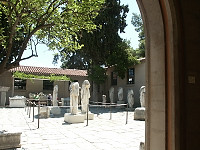

|
Tender from ship heading towards Navplion, Greece. |
The port of Navplion, Greece |

On the road to Corinth |
The Corinth canal |
|
The Corinth canal |

Fountain of Glauke with the Temple of Apollo in the background. |

The Temple of Apollo |
The Temple of Apollo |

Service building and Fountain of Glauke |

Walls of shops in the Agora. |
More walls |

More walls or shops |
|
Agora - 'The Bema". In the background the Acrocorinth. |

The theater at the Temple of Apollo in Corinth, Greece. |

Our guide lecturing about the Apollo site. |
Stones in the theater at Corinth. |

Ruins in the Agora. |

Some of the ruins at the Apollo Temple in Corinth. |
The agora for the Apollo Temple |

Corinth Archaelogical Museum |
|

|

Statues and wall sculptures |
More detail of statues |
Port of Navplion, Greece |
|
In Navplion port, Greece |

Tender that brought us to Navplion |

A yacht in the port of Navplion |